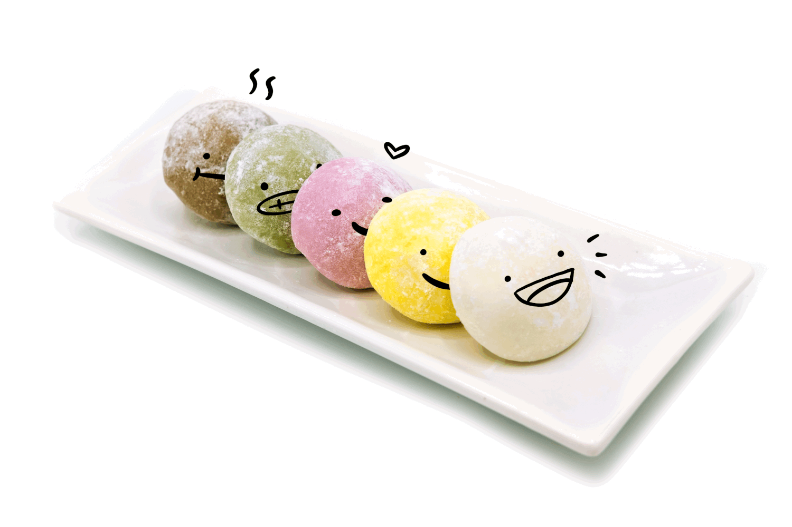

Liste Articles
Mochi
Le mochi est un gâteau de riz japonais préparé à partir de riz gluant japonica à grains courts (mochigome), et parfois d'autres ingrédients comme de l'eau, du sucre et de la fécule de maïs.
| Nom | Image | Prix |
| Mochi |  | 0,60€ - 6€ |
Menu